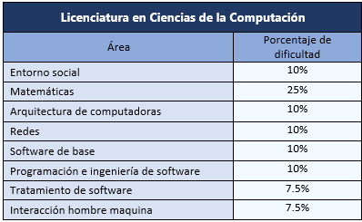

La licenciatura en Ciencias de la Computación forma al estudiante con conocimientos teóricos en la disciplina y con habilidades de programación, para que sean capaces de desarrollar soluciones computacionales de frontera; asimismo, le proporciona información que le permita adaptarse a tecnologías emergentes e ideas nuevas, y los prepara para analizar, diseñar y construir sistemas de software complejos, atender áreas específicas como la inteligencia artificial; reciben una formación, capacitación y actualización de recursos humanos.
El propósito del plan de estudios de la Licenciatura en Ciencias de la Computación es formar profesionales competentes en el área de las ciencias de la computación para desarrollar y gestionar tecnología computacional; realizar actividades de investigación científica; diseñar e implementar software de base y software de aplicación, novedosos y eficientes; considerando la estructura, operación y necesidades de información de las organizaciones, con apego a la ética profesional y el servicio a la sociedad.
El programa de estudio de la Licenciatura en Ciencias de la Computación está conformado por asignaturas obligatorias (268 créditos), las prácticas profesionales (8 créditos), el servicio social (12 créditos), las optativas (54 créditos) y las libres (18 créditos), para finalizar dicha Licenciatura se debe tener un total de 360 créditos dedicando 6240 horas. Asimismo, la modalidad de las asignaturas del Plan de Estudios es mixta, en esta modalidad es importante el desarrollo de actividades de aprendizaje, bajo la conducción del profesor, que lleva a cabo el estudiante en espacios internos y externos de la Facultad o bien en cualquier espacio.
La malla curricular indica los momentos en que se debe cursar las asignaturas, talleres, prácticas profesionales y servicio social. Cabe mencionar, que la asignatura Taller de Emprendedores y las Prácticas Profesionales, podrán iniciarse cuando se hayan completado 180 créditos, el requisito para iniciar el Servicio Social es haber acumulado, al menos, 252 créditos del Plan de Estudios.

Puedes encontrar más información con respecto a estas áreas en el siguiente documento creado por la ANIEI
En su mayoría, los egresados de las Ciencias en Computación tienden a tener ofertas laborales, en ciertos casos, tardan como máximo 3 meses en tener un empleo. Pueden enfocarse en el área de la investigación, siendo uno de los investigadores que se enfoquen en todo lo relacionado con la computación o participar en proyectos de investigación multidisciplinarios, asimismo, pueden trabajar en una variedad de organizaciones, ya que, pueden desarrollar un software, monitorear el mantenimiento de bases de datos o la creación de sitios web; además, pueden desarrollarse en otros campos, como finanzas, aplicación de la ley, diseño, etc.
Eduardo
1er semestre
¿Por qué elegiste esta carrera?
Me gusta el área de cómputo.
¿Qué es lo que más te gusta de tu carrera?
La programación.
¿Qué consejo le darías a un estudiante que se encuentra en el primer semestre de la misma carrera?
No dejes que se te acumulen las tareas ):
25/01/2021